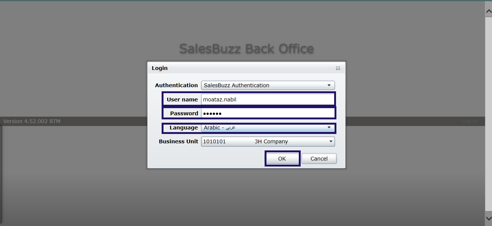
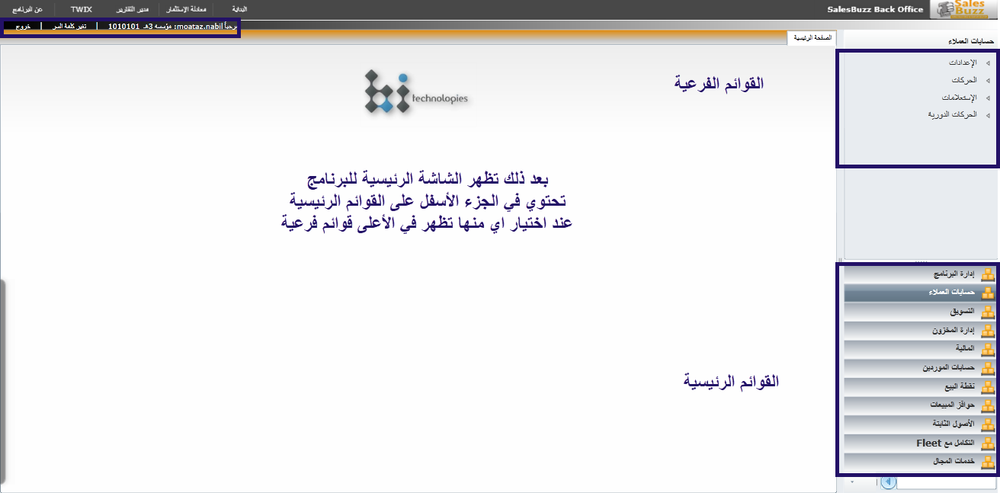

ارشادات هامة و تسجيل الدخول
الصفحه الرئيسية
الدخول الى البرنامج
- رابط الدخول الى السيرفر
- كتابة البيانات اسم المستخدم-كلمة السر واختيار اللغة
- الضغط على موافق

- ليتم الدخول الى صفحة البداية
- بعد ذلك تظهر الشاشة الرئيسية للبرنامج
تحتوي في الجزء الأسفل على القوائم الرئيسية
عند اختيار اي منها تظهر في الأعلى قوائم فرعية

الايقونات
- اضافة حركة او سطر جديد
- حفظ التغيرات
 لمسح الحركة او السطر بعد الحفظ يجب ان تكون الحركة غير مرحلة
لمسح الحركة او السطر بعد الحفظ يجب ان تكون الحركة غير مرحلة - لالغاء التعديل او الحركة قبل الحفظ
- لطباعة الحركة
- لمعرفة المستخدم الذي أنشأ الحركة
يحذر استخدام البرنامج بدون اسخدام الانترنت
التنبيه من الساده المشرفين على جميع المناديب بضرورة استخدام باقه الانترنت للبرنامج فقط
عدم ادخال الاسم وكلمة السر للبرنامج خطأ اكثر من مره
التنبيه على جميع المناديب بأجراء الرفع البيانات و اجراء تحديث للبرنامج بعد كل عمليه
عند عمل اي حركة مالية يجب مراعاة الآتي
- تاريخ الحركة
- وصف الحركة في الأعلى والاسفل
- اسم الموظف ضروري في الحركات التي تخص المندوب
- في الشيكات يتم كتابة رقم الشيك وتاريخ الاستحقاق
- عند عمل دفع مورد يجب مراعاة اسم البنك المودع به
- عند عمل حركة وتم التراجع عنها وتم حفظها يجب حذفها
- عند عمل حركة استلام نقدية من مندوب يجب مراعاة اختيار نفس المندوب في الاعلى والاسفل